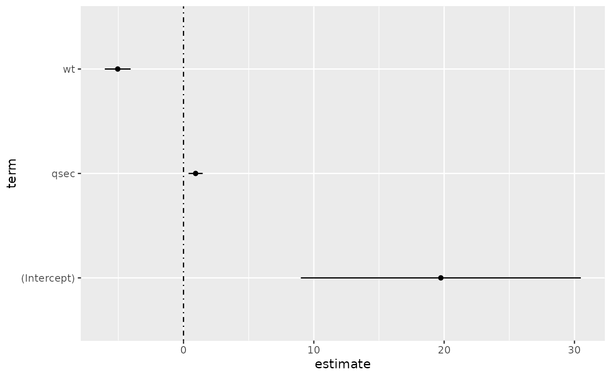
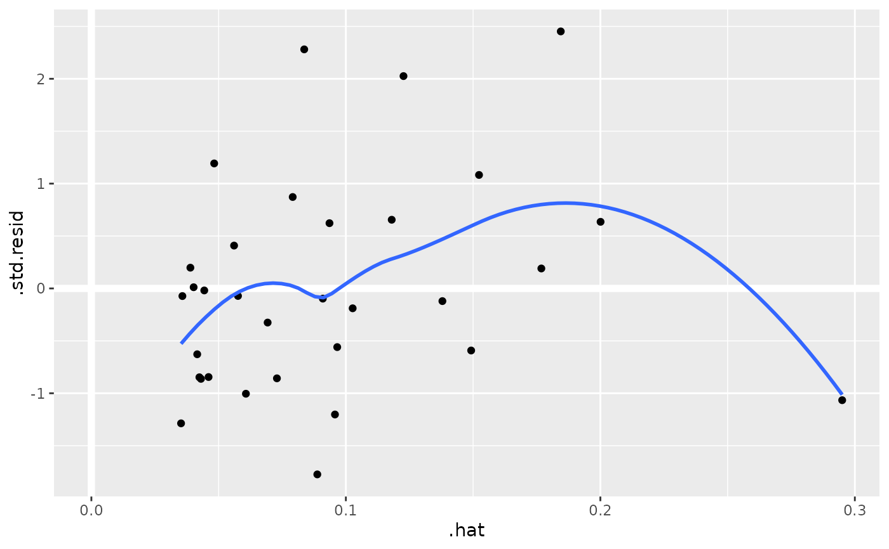
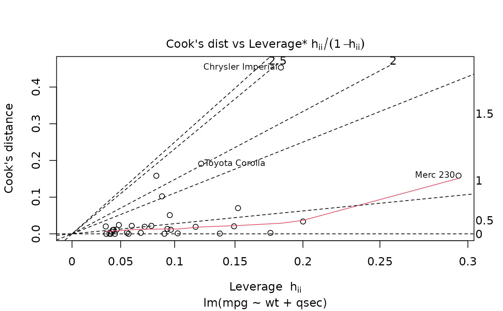
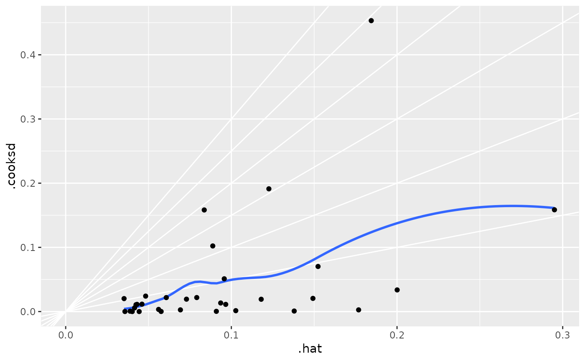
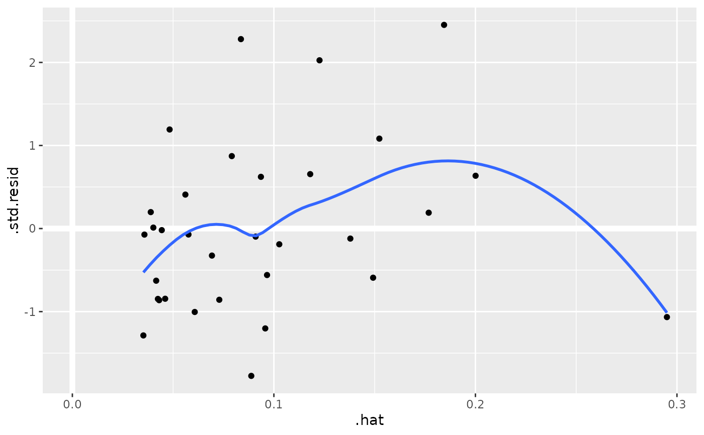
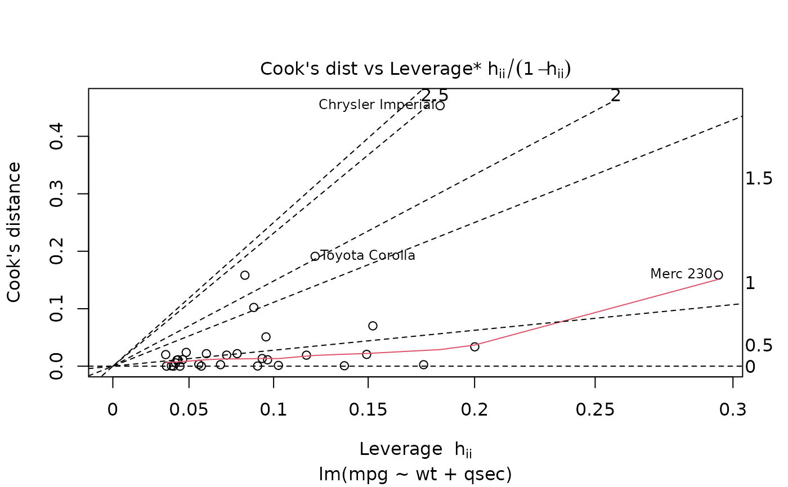
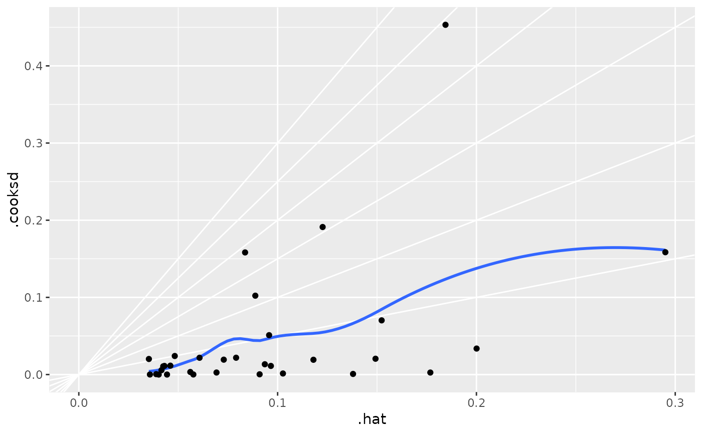

Augment accepts a model object and a dataset and adds
information about each observation in the dataset. Most commonly, this
includes predicted values in the .fitted column, residuals in the
.resid column, and standard errors for the fitted values in a .se.fit
column. New columns always begin with a . prefix to avoid overwriting
columns in the original dataset.
Users may pass data to augment via either the data argument or the
newdata argument. If the user passes data to the data argument,
it must be exactly the data that was used to fit the model
object. Pass datasets to newdata to augment data that was not used
during model fitting. This still requires that at least all predictor
variable columns used to fit the model are present. If the original outcome
variable used to fit the model is not included in newdata, then no
.resid column will be included in the output.
Augment will often behave differently depending on whether data or
newdata is given. This is because there is often information
associated with training observations (such as influences or related)
measures that is not meaningfully defined for new observations.
For convenience, many augment methods provide default data arguments,
so that augment(fit) will return the augmented training data. In these
cases, augment tries to reconstruct the original data based on the model
object with varying degrees of success.
The augmented dataset is always returned as a tibble::tibble with the
same number of rows as the passed dataset. This means that the passed
data must be coercible to a tibble. If a predictor enters the model as part
of a matrix of covariates, such as when the model formula uses
splines::ns(), stats::poly(), or survival::Surv(), it is represented
as a matrix column.
We are in the process of defining behaviors for models fit with various
na.action arguments, but make no guarantees about behavior when data is
missing at this time.
Usage
# S3 method for class 'lm'
augment(
x,
data = model.frame(x),
newdata = NULL,
se_fit = FALSE,
interval = c("none", "confidence", "prediction"),
conf.level = 0.95,
...
)Arguments
- x
An
lmobject created bystats::lm().- data
A base::data.frame or
tibble::tibble()containing the original data that was used to produce the objectx. Defaults tostats::model.frame(x)so thataugment(my_fit)returns the augmented original data. Do not pass new data to thedataargument. Augment will report information such as influence and cooks distance for data passed to thedataargument. These measures are only defined for the original training data.- newdata
A
base::data.frame()ortibble::tibble()containing all the original predictors used to createx. Defaults toNULL, indicating that nothing has been passed tonewdata. Ifnewdatais specified, thedataargument will be ignored.- se_fit
Logical indicating whether or not a
.se.fitcolumn should be added to the augmented output. For some models, this calculation can be somewhat time-consuming. Defaults toFALSE.- interval
Character indicating the type of confidence interval columns to be added to the augmented output. Passed on to
predict()and defaults to "none".- conf.level
The confidence level to use for the interval created if
intervalis"confidence"or"prediction". Must be strictly greater than 0 and less than 1. Defaults to 0.95, which corresponds to a 95 percent confidence/prediction interval.- ...
Additional arguments. Not used. Needed to match generic signature only. Cautionary note: Misspelled arguments will be absorbed in
..., where they will be ignored. If the misspelled argument has a default value, the default value will be used. For example, if you passconf.lvel = 0.9, all computation will proceed usingconf.level = 0.95. Two exceptions here are:
Details
When the modeling was performed with na.action = "na.omit"
(as is the typical default), rows with NA in the initial data are omitted
entirely from the augmented data frame. When the modeling was performed
with na.action = "na.exclude", one should provide the original data
as a second argument, at which point the augmented data will contain those
rows (typically with NAs in place of the new columns). If the original data
is not provided to augment() and na.action = "na.exclude", a
warning is raised and the incomplete rows are dropped.
Some unusual lm objects, such as rlm from MASS, may omit
.cooksd and .std.resid. gam from mgcv omits .sigma.
When newdata is supplied, only returns .fitted, .resid and
.se.fit columns.
See also
augment(), stats::predict.lm()
Other lm tidiers:
augment.glm(),
glance.glm(),
glance.lm(),
glance.summary.lm(),
glance.svyglm(),
tidy.glm(),
tidy.lm(),
tidy.lm.beta(),
tidy.mlm(),
tidy.summary.lm()
Value
A tibble::tibble() with columns:
- .cooksd
Cooks distance.
- .fitted
Fitted or predicted value.
- .hat
Diagonal of the hat matrix.
- .lower
Lower bound on interval for fitted values.
- .resid
The difference between observed and fitted values.
- .se.fit
Standard errors of fitted values.
- .sigma
Estimated residual standard deviation when corresponding observation is dropped from model.
- .std.resid
Standardised residuals.
- .upper
Upper bound on interval for fitted values.
Examples
library(ggplot2)
library(dplyr)
mod <- lm(mpg ~ wt + qsec, data = mtcars)
tidy(mod)
#> # A tibble: 3 × 5
#> term estimate std.error statistic p.value
#> <chr> <dbl> <dbl> <dbl> <dbl>
#> 1 (Intercept) 19.7 5.25 3.76 7.65e- 4
#> 2 wt -5.05 0.484 -10.4 2.52e-11
#> 3 qsec 0.929 0.265 3.51 1.50e- 3
glance(mod)
#> # A tibble: 1 × 12
#> r.squared adj.r.squared sigma statistic p.value df logLik AIC
#> <dbl> <dbl> <dbl> <dbl> <dbl> <dbl> <dbl> <dbl>
#> 1 0.826 0.814 2.60 69.0 9.39e-12 2 -74.4 157.
#> # ℹ 4 more variables: BIC <dbl>, deviance <dbl>, df.residual <int>,
#> # nobs <int>
# coefficient plot
d <- tidy(mod, conf.int = TRUE)
ggplot(d, aes(estimate, term, xmin = conf.low, xmax = conf.high, height = 0)) +
geom_point() +
geom_vline(xintercept = 0, lty = 4) +
geom_errorbarh()

# aside: There are tidy() and glance() methods for lm.summary objects too.
# this can be useful when you want to conserve memory by converting large lm
# objects into their leaner summary.lm equivalents.
s <- summary(mod)
tidy(s, conf.int = TRUE)
#> # A tibble: 3 × 7
#> term estimate std.error statistic p.value conf.low conf.high
#> <chr> <dbl> <dbl> <dbl> <dbl> <dbl> <dbl>
#> 1 (Intercept) 19.7 5.25 3.76 7.65e- 4 9.00 30.5
#> 2 wt -5.05 0.484 -10.4 2.52e-11 -6.04 -4.06
#> 3 qsec 0.929 0.265 3.51 1.50e- 3 0.387 1.47
glance(s)
#> # A tibble: 1 × 8
#> r.squared adj.r.squared sigma statistic p.value df df.residual
#> <dbl> <dbl> <dbl> <dbl> <dbl> <dbl> <int>
#> 1 0.826 0.814 2.60 69.0 9.39e-12 2 29
#> # ℹ 1 more variable: nobs <dbl>
augment(mod)
#> # A tibble: 32 × 10
#> .rownames mpg wt qsec .fitted .resid .hat .sigma .cooksd
#> <chr> <dbl> <dbl> <dbl> <dbl> <dbl> <dbl> <dbl> <dbl>
#> 1 Mazda RX4 21 2.62 16.5 21.8 -0.815 0.0693 2.64 2.63e-3
#> 2 Mazda RX4 W… 21 2.88 17.0 21.0 -0.0482 0.0444 2.64 5.59e-6
#> 3 Datsun 710 22.8 2.32 18.6 25.3 -2.53 0.0607 2.60 2.17e-2
#> 4 Hornet 4 Dr… 21.4 3.22 19.4 21.6 -0.181 0.0576 2.64 1.05e-4
#> 5 Hornet Spor… 18.7 3.44 17.0 18.2 0.504 0.0389 2.64 5.29e-4
#> 6 Valiant 18.1 3.46 20.2 21.1 -2.97 0.0957 2.58 5.10e-2
#> 7 Duster 360 14.3 3.57 15.8 16.4 -2.14 0.0729 2.61 1.93e-2
#> 8 Merc 240D 24.4 3.19 20 22.2 2.17 0.0791 2.61 2.18e-2
#> 9 Merc 230 22.8 3.15 22.9 25.1 -2.32 0.295 2.59 1.59e-1
#> 10 Merc 280 19.2 3.44 18.3 19.4 -0.185 0.0358 2.64 6.55e-5
#> # ℹ 22 more rows
#> # ℹ 1 more variable: .std.resid <dbl>
augment(mod, mtcars, interval = "confidence")
#> # A tibble: 32 × 20
#> .rownames mpg cyl disp hp drat wt qsec vs am
#> <chr> <dbl> <dbl> <dbl> <dbl> <dbl> <dbl> <dbl> <dbl> <dbl>
#> 1 Mazda RX4 21 6 160 110 3.9 2.62 16.5 0 1
#> 2 Mazda RX4 Wag 21 6 160 110 3.9 2.88 17.0 0 1
#> 3 Datsun 710 22.8 4 108 93 3.85 2.32 18.6 1 1
#> 4 Hornet 4 Drive 21.4 6 258 110 3.08 3.22 19.4 1 0
#> 5 Hornet Sporta… 18.7 8 360 175 3.15 3.44 17.0 0 0
#> 6 Valiant 18.1 6 225 105 2.76 3.46 20.2 1 0
#> 7 Duster 360 14.3 8 360 245 3.21 3.57 15.8 0 0
#> 8 Merc 240D 24.4 4 147. 62 3.69 3.19 20 1 0
#> 9 Merc 230 22.8 4 141. 95 3.92 3.15 22.9 1 0
#> 10 Merc 280 19.2 6 168. 123 3.92 3.44 18.3 1 0
#> # ℹ 22 more rows
#> # ℹ 10 more variables: gear <dbl>, carb <dbl>, .fitted <dbl>,
#> # .lower <dbl>, .upper <dbl>, .resid <dbl>, .hat <dbl>,
#> # .sigma <dbl>, .cooksd <dbl>, .std.resid <dbl>
# predict on new data
newdata <- mtcars |>
head(6) |>
mutate(wt = wt + 1)
augment(mod, newdata = newdata)
#> # A tibble: 6 × 14
#> .rownames mpg cyl disp hp drat wt qsec vs am gear
#> <chr> <dbl> <dbl> <dbl> <dbl> <dbl> <dbl> <dbl> <dbl> <dbl> <dbl>
#> 1 Mazda RX4 21 6 160 110 3.9 3.62 16.5 0 1 4
#> 2 Mazda RX… 21 6 160 110 3.9 3.88 17.0 0 1 4
#> 3 Datsun 7… 22.8 4 108 93 3.85 3.32 18.6 1 1 4
#> 4 Hornet 4… 21.4 6 258 110 3.08 4.22 19.4 1 0 3
#> 5 Hornet S… 18.7 8 360 175 3.15 4.44 17.0 0 0 3
#> 6 Valiant 18.1 6 225 105 2.76 4.46 20.2 1 0 3
#> # ℹ 3 more variables: carb <dbl>, .fitted <dbl>, .resid <dbl>
# ggplot2 example where we also construct 95% prediction interval
# simpler bivariate model since we're plotting in 2D
mod2 <- lm(mpg ~ wt, data = mtcars)
au <- augment(mod2, newdata = newdata, interval = "prediction")
ggplot(au, aes(wt, mpg)) +
geom_point() +
geom_line(aes(y = .fitted)) +
geom_ribbon(aes(ymin = .lower, ymax = .upper), col = NA, alpha = 0.3)
 # predict on new data without outcome variable. Output does not include .resid
newdata <- newdata |>
select(-mpg)
#> Error in select(newdata, -mpg): unused argument (-mpg)
augment(mod, newdata = newdata)
#> # A tibble: 6 × 14
#> .rownames mpg cyl disp hp drat wt qsec vs am gear
#> <chr> <dbl> <dbl> <dbl> <dbl> <dbl> <dbl> <dbl> <dbl> <dbl> <dbl>
#> 1 Mazda RX4 21 6 160 110 3.9 3.62 16.5 0 1 4
#> 2 Mazda RX… 21 6 160 110 3.9 3.88 17.0 0 1 4
#> 3 Datsun 7… 22.8 4 108 93 3.85 3.32 18.6 1 1 4
#> 4 Hornet 4… 21.4 6 258 110 3.08 4.22 19.4 1 0 3
#> 5 Hornet S… 18.7 8 360 175 3.15 4.44 17.0 0 0 3
#> 6 Valiant 18.1 6 225 105 2.76 4.46 20.2 1 0 3
#> # ℹ 3 more variables: carb <dbl>, .fitted <dbl>, .resid <dbl>
au <- augment(mod, data = mtcars)
ggplot(au, aes(.hat, .std.resid)) +
geom_vline(size = 2, colour = "white", xintercept = 0) +
geom_hline(size = 2, colour = "white", yintercept = 0) +
geom_point() +
geom_smooth(se = FALSE)
#> Warning: Using `size` aesthetic for lines was deprecated in ggplot2 3.4.0.
#> ℹ Please use `linewidth` instead.
#> `geom_smooth()` using method = 'loess' and formula = 'y ~ x'

plot(mod, which = 6)

ggplot(au, aes(.hat, .cooksd)) +
geom_vline(xintercept = 0, colour = NA) +
geom_abline(slope = seq(0, 3, by = 0.5), colour = "white") +
geom_smooth(se = FALSE) +
geom_point()
#> `geom_smooth()` using method = 'loess' and formula = 'y ~ x'

# column-wise models
a <- matrix(rnorm(20), nrow = 10)
b <- a + rnorm(length(a))
result <- lm(b ~ a)
tidy(result)
#> # A tibble: 6 × 6
#> response term estimate std.error statistic p.value
#> <chr> <chr> <dbl> <dbl> <dbl> <dbl>
#> 1 Y1 (Intercept) -0.292 0.280 -1.04 0.332
#> 2 Y1 a1 1.28 0.232 5.50 0.000903
#> 3 Y1 a2 -0.519 0.187 -2.78 0.0274
#> 4 Y2 (Intercept) -0.0923 0.259 -0.357 0.732
#> 5 Y2 a1 -0.231 0.214 -1.08 0.317
#> 6 Y2 a2 0.768 0.172 4.45 0.00296
# predict on new data without outcome variable. Output does not include .resid
newdata <- newdata |>
select(-mpg)
#> Error in select(newdata, -mpg): unused argument (-mpg)
augment(mod, newdata = newdata)
#> # A tibble: 6 × 14
#> .rownames mpg cyl disp hp drat wt qsec vs am gear
#> <chr> <dbl> <dbl> <dbl> <dbl> <dbl> <dbl> <dbl> <dbl> <dbl> <dbl>
#> 1 Mazda RX4 21 6 160 110 3.9 3.62 16.5 0 1 4
#> 2 Mazda RX… 21 6 160 110 3.9 3.88 17.0 0 1 4
#> 3 Datsun 7… 22.8 4 108 93 3.85 3.32 18.6 1 1 4
#> 4 Hornet 4… 21.4 6 258 110 3.08 4.22 19.4 1 0 3
#> 5 Hornet S… 18.7 8 360 175 3.15 4.44 17.0 0 0 3
#> 6 Valiant 18.1 6 225 105 2.76 4.46 20.2 1 0 3
#> # ℹ 3 more variables: carb <dbl>, .fitted <dbl>, .resid <dbl>
au <- augment(mod, data = mtcars)
ggplot(au, aes(.hat, .std.resid)) +
geom_vline(size = 2, colour = "white", xintercept = 0) +
geom_hline(size = 2, colour = "white", yintercept = 0) +
geom_point() +
geom_smooth(se = FALSE)
#> Warning: Using `size` aesthetic for lines was deprecated in ggplot2 3.4.0.
#> ℹ Please use `linewidth` instead.
#> `geom_smooth()` using method = 'loess' and formula = 'y ~ x'

plot(mod, which = 6)

ggplot(au, aes(.hat, .cooksd)) +
geom_vline(xintercept = 0, colour = NA) +
geom_abline(slope = seq(0, 3, by = 0.5), colour = "white") +
geom_smooth(se = FALSE) +
geom_point()
#> `geom_smooth()` using method = 'loess' and formula = 'y ~ x'

# column-wise models
a <- matrix(rnorm(20), nrow = 10)
b <- a + rnorm(length(a))
result <- lm(b ~ a)
tidy(result)
#> # A tibble: 6 × 6
#> response term estimate std.error statistic p.value
#> <chr> <chr> <dbl> <dbl> <dbl> <dbl>
#> 1 Y1 (Intercept) -0.292 0.280 -1.04 0.332
#> 2 Y1 a1 1.28 0.232 5.50 0.000903
#> 3 Y1 a2 -0.519 0.187 -2.78 0.0274
#> 4 Y2 (Intercept) -0.0923 0.259 -0.357 0.732
#> 5 Y2 a1 -0.231 0.214 -1.08 0.317
#> 6 Y2 a2 0.768 0.172 4.45 0.00296